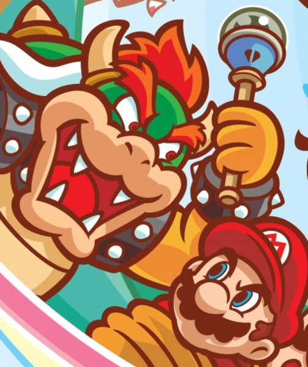

Bite-sized in fact!
Mario and else articles that don't contain oddities for the most part, are sometimes more personal, and overall too small to be one webpage
No order! Hear me?
Note: I will be disinclined to put games that are less than five to tenish years old on this list. It’s nothing against new stuff, I just need to reflect years later, consider its impact, etc as I highlight the main points I like.

Official* box art.
**This may or may not be a lie
0. Super Mario 64 and DS remake: This is ground zero, my introduction to Mario around 2003 and what made me crazy for a Nintendo 64. Read more about it here and just know that I like everything about it. Just like poetry the DS remake was the first Nintendo DS game I owned. I was amazed out of my mind that they not only recreated that game on a handheld but added more content. It's a golden example of what an ambitious remake should be, with full respect to the original, a genuine effort to expand in ways that make sense, some fan service without going too far, and a boat load of fun, at least if you can adapt to using a D-pad..
Explore nine worlds and 96 levels of non-stop action!
1. Super Mario Bros 4: Super Mario World: This sequel to Super Mario Bros. 3 set the template, the first (to me) ‘modern’ 2D Mario game for it's refinery of gameplay. Exploring is so fun, the world feels so big, and the controls are so responsive. While I enjoy and like things about SMB3, it’s respectfully a more primitive adventure in some ways. There is no backtracking once a level is cleared once and it's just a bit too long to not have a save function if you actually want to experience everything in the eight worlds. I am evaluating the original release, not remakes. On the NES, the best you can do is marathon or use warp whistles to skip around. Enough about that though, just know that I'm not a hater.
Super Mario World reins in the world themes as a 'Dinosaur Land' adventure, but it bridges locations together to encourage finding all secrets on one save file. The powerups are cut from what SMB3 offered and there's no item drawer, but everything (this includes Yoshi's contributions) is more mechanically focused and frequent from early to late game, compared SMB3's situational side grade powerups (that ARE super cool, not denying). This goes back to a philosophy difference in design, with SMB3 being like a typical game from the era where the secrets are missable and that's meant to be the point. Other things I like are the mechanics of holding items, kicking and catching them, even while climbing, a sorta niche but nimble mechanic sometimes stripped from later games. While I think the music itself is mostly 'okay', one aspect I only appreciated later was the soundstage, as I first played this via the GBA port. On the SNES it's full of depth, more so than later technically superior titles. The graphics have a very nice style to them and perfect detail, especially again if we're staying away from the overly saturated GBA port, with just the right amount of off-modelness to some sprites that was the norm before New Super Mario Bros and onward unified everything. Well, exceptions are the Koopalings and Bowser. And maybe Peach. Not my favorite sprite work.
Is it perfect? No. The save points are not as convenient as a newer game would have them, and some secrets get formulaic, typically involving flying somewhere with a cape or using Yoshi. Navigation can be slow if you don’t have all of the Star Road cleared and accessible. Some of the Koopaling fights are copies of each other (but.. that’s a sin for a lot of Mario games, even newer ones!) Outside a few special levels this is on easier side for a few reasons, particularly compared to SMB3. To start with a compliment, again it controls so well that mistakes are your fault. You can always come back for secrets later. With save points you won't be game overing and restarting a world. While powered up Mario can only take one hit ala Japanese SMB3 before going small, you have a reserve and Yoshi can give you infinite hits in some situations, or bail you out of falling to your doom. If there isn't a secret exit, which is clearly marked on the map, you are only striving for Dragon Coins. The original release didn't even keep track of that I think, though the GBA did it's due diligence by fixing that. Lastly the spin jump can be used on all sorts of threats that later games disallow. Now with those factors in mind, the bridge from this game to the next original 2D Mario platformer, New Super Mario Bros isn't that far is it? It's notoriously easy too.

Bringing you enhanced portable remakes since 1999. (No, Game and Watch doesn't count..)
2. Super Mario Bros Deluxe: A GBA color ‘enhanced’ port of SMB, on the list for uniqueness. I consider this a precursor to the Mario Advance series remakes and a few other 'modern' design decisions in general. It ports over the NES classic with a few tweaks to fit the system a little more. This port was how I first beat SMB1 in the day and I swear that tiny bit of screen scrolling you can do made a difference. This game added a map system for fluff, but also a nice save system. Now we get to the goodies with the added extra ‘modes’. One is a general treasure hunt of sorts and it’s no laughing matter. Special coins and yoshi eggs are hidden in the vanilla SMB1 levels and you have to find them. Just try without a guide.. There’s also a You vs Boo race where you do what it sounds like and race the incorporeal baddies through a level while trying to survive. There’s stamps and other goodies that.. well you need attachments to enjoy so never mind. Had to sell those somehow!
Like I said at the outset, it feels ahead of its time. Super Mario All-Stars had already reissued older games with new graphics and a few quality of life tweaks, but that's on a home console. At this time of 1999 we know that obviously handhelds struggled with processing power, and could have a reputation of being the lesser offering automatically. This game went for a straight port, albeit of an older game, and added more content and QOL tweaks. In the next era the GBA and even DS (see entry #1) would take this to new heights. As for SMB: Deluxe, not to be confused with the solid but not particularly interesting New Super Mario Bros U: Deluxe, it’s just a cool underrated game!

It IS great to be back..
3. Paper Mario: The Thousand Year Door (org. not remake): God's gift to us. Okay that's hyperbole, but not even the backtracking and stage hazards ticks me off that much, so I must be a true fan. Picking up this game at random, as it was a Player Choice 19.99 game in the later 00s, I had no idea what I was getting into, aside from the Gamestop clerk actually telling me how great it was off the bat. My view of Mario comes from the world this game crafts. Aside from slowish navigation, there's nothing I don't like about this game. I went into Super Mario World enough when I really didn't have to, considering how much almost everyone loves this one, so I won't repeat the mistake. Fun fact: as a kid I was very proud of how I beat the Shadow Queen on my first try, albeit by the skin of my teeth. Replaying as an adult, it's not nearly that bad, but we can't discount a memory like that. It's a 10/10 for me.

What switch do I flip to get insurance to cover this?
4. Mario Karts in General (Except less than half of them): You know, I never intended on getting Mario Kart: Double Dash!! sometime c. 2005ish. I wanted Mario Superstar Baseball, but the game was new on shelves at fifty bucks, so I left that EB Games if I recall with a used copy of MK:DD instead. Now a friend and I had fun with this one, even without the ability to save progress early on. There was also his hilariously inaccurate Prima games guide I'd picked up, but around then I was focused soon enough on a Nintendo DS and it's killer app Mario Kart DS that I'll get into, so funnily most of my retrospectives will come from revisiting and completing the game as an adult.
This is the only MK title to me where the roster is tight yet generous at the same time. Toadette was created just for this game, Koopa came back from Super Mario Kart, and we had the starting to become typical spin-off game crew here of Daisy and Waluigi, plus some villains of Bowser Junior, Petey and King Boo, all pretty newish characters. This is the only MK game with the double racer gimmick, and while there's not a ton it does aside from allowing you to punch others, you have character specific special items. I typically dislike mechanics that arbitrarily create tiers where there really should be one, but it's not that bad here in my experience. I didn't feel that I was 'throwing' by not bothering to pick the best character item, probably because they did the karts right. This is the first game where karts are just tied to the weight class, and you can mix and match for the synergy you want. Small characters can fix in any kart, but large only heavy karts, so there's some bias, but good vehicles are in every class so it's alright. Some kart designs are funky or derivative of a worser entry version, but they are 'fun' and 'karty' unlike some of the later designs in later games that I understand are sleeker and stuff, but forget that this is supposed to be about go-karts and such. Overall, it's different and that's good, but the single player experience doesn't have anything beyond grand prix and time trails like the predecessors, so it's hard to put it above successors.
One of my favorite renders from this era.
Mario Kart DS: The game that made me crazy for a Nintendo DS in 2006. The cast is adequate I suppose, if odd. Why Dry Bones over Koopa? R.O.B. is from left field intentionally, but they spoil his karts before the character which I always thought was funny. The visuals are nice for the system, maybe ugly sometimes on closeups but not distracting in actual gameplay. The stand out is the sheer amount of content. The new courses blew me away and the retro options were fantastic considering they were from other 3D games like Double Dash!! and 64. The controls are very tight, almost too much so, once you are adapted and while things can get crazy as in any other game, the ability to see everyone’s items in real time can put the ball in your court here. The touch screen in addition showed the map and obstacles, one of the better implementations.
There was for the first time a full single player versus and battle mode with customization on rules. Mission mode could get repetitive but is a great challenge regardless, escalating in exciting and rewarding ways. This includes the boss battle, an idea not replicated. Sadly I couldn’t use the WIFI back then, but I heard it was decent and redolent of the older wild west approach, where people could cheat if they wanted unfortunately, but you take the good with the bad there. I didn’t like karts being tied to characters when Double Dash!! before it didn’t do that, but later you unlock having every kart for every character which.. Is a bit of an over correction but cool. Just a top MK game, for it’s time and even now, though I fully understand why they stopped letting you create your own custom banner. Let's uh.. leave it at that heh heh..

Mario Kart Wii: Like most of the Wii era this game focuses on being an accessible yet crazy experience. Yes this game is broken balance wise, but it’s fun either way with good courses, good multiplayer, good (wild west again, so cheater haven) WIFI, a cast that’s exactly as large as it needed to be, karts that look cool and are tied to the weight class like it should be as opposed to the character, and the final MK title where stats were set in stone, meaning you don’t have to min/max to be remotely competitive. Oh wait..
That's me!
So it is highly personal, but I always felt that the kart building mechanic in Mario Kart 7 onward took away from the concept of iconic karts (though certain karts were revived in the form of parts at least). Note that the ability to fine tune your vehicle's performance didn’t remove the hidden stats you’d need to look up. Those games also further segmented the weight classes in to more categories, but I’m digressing. (Actually just see this article for what I really feel about MK:7)
No MK: Wii wasn’t perfect. The visuals are glossed to high heaven. Twelve racers made things nuts with cpus or humans, especially humans online who might be cheating. Hacking was easy. I did it for fun back in the day! (Single player. I'm no fraudster.) Tracks were either awkwardly wide sometimes or a huge traffic jam. Karts and bikes were not well thought out. They really believed that being vulnerable during wheelies was enough of a weakness. Resoundingly it wasn’t. The missions were removed from MK: DS, but some of the changes of the battle modes were welcome. I just wish they’d allowed it to not be a team thing all of the time, flexibility MK: DS had. Single player verses is still in full force thankfully and perfect. Motion controls were the one thing everyone loved to rag on in the day but it was a free bonus, a cool gimmick to get your grandma to give it a try, was optional, and was something that you could get used to if you were dedicated enough. The game gives you an icon to show your supremacy if you do. VR was ostensibly an indicator of ‘skill’ in online races. Short term it was more of a numbers game, and that's no cope from me or anything because I didn't like lag and stuck to mostly offline play..
Addendum: A review of MK: Wii was my first submission to Lemmy's Land under ‘super_stanly’. (See: here) What? No Mario Kart 8 section, or the mobile game? I have observations, especially over MK:8, but let me think about it more. What about Super Mario Kart, 64, and Super Circuit? They are okay. SMK is a little hard to play from a modern perspective and doesn't use the conventions you're used to, but it was the start. MK64 has legendary tracks and music in my opinion, but the actual racing part and cpus are some of the most broken things in any game. Super Circuit was sorta trying to bridge old and modern for it's time, doing the best it could on the hardware and giving us a crude version of some retro tracks, but again that flat style isn't my thing.

Pop Quiz. What number are we on?
5. Super Mario Galaxy: This 3D Mario platformer was an unforgettable experience for many, myself included. Funnily it wasn’t a killer app for me on the Wii like some of the other titles you’ll see on this list, though when I’d play it in game store demos I was impressed overall.
Gameplay goes back to basics in ways, so much that it’s more linear as many noted back then. Like Mario 64 you need to get a star by reaching an end point, racing a NPC, or collecting things, all until you have 120… Or is it 121? (Spoilers!.. Eh not really) Sometimes there are extra gimmicks attached with the prankster comets. There might be a time limit, added collectibles, or giving you one hit. Remember that in this game Mario only has three by default anyway, expandable to six maximum. Some of these get intense quickly but are a worthy challenge in my opinion. Mario’s move set is only enhanced only by his spin move, but I liked that over F.L.U.D.D. (sorry fans), finding it natural very quickly.
Galaxy has a hub like the previous titles, though the observatory isn’t as multifaceted as Peach’s Castle or Isle Delfino. It is pretty but the sections of the space station and the levels or galaxies themselves are compartmentalized from each other. The story also starts almost like an excuse plot, as you’ve never heard of a Star Festival before have you, but beneath that we have new characters with honest to goodness backstory, which some later games would ignore or invalidate. Oh well!
There are plenty of bangers as far as level and boss fights go, but most of the worlds aren’t as iconic as in 64 or Sunshine. They cover lots of environmental tropes of water, desert, lava, grassy etc, yes even in space, but some are very brief ordeals or just a floating obstacle course to get one star in and you're done. Still, one can compare this to subareas in the previous games I suppose. Galaxies don’t have as many star missions as you might be used to if we aren’t counting the prankster comets, and like Sunshine missions are locked to one star unless a secret one is there. Luigi made it in and you rescue him, but he can only play as him in the end. Replaying the game again (yes I know) wasn’t as horrible as you might think, but it’s a drag if you’ve not taken breaks. He does behave differently than Mario, intended to be harder maybe, but for us die-hard Luigi stans it’s nothing we’re not used to.
Bonus: Super Mario Galaxy 2: It’s an expansion pack really, with a few extra ideas but for the most part just additional Galaxy levels to enjoy, tied together by a few quality of life but immersion diminishing features like a NSMBish level select. At least you can use Luigi early on, though in the process you lose details where his version of a mission was harder. Green stars are littered everywhere as an extra challenge if you like scavenger hunts. I don’t hate this game by any means, (check out this article for more in depth thoughts) but it’s derivative and not a new adventure in my eyes.

Official* box art (for real this time).
**Yeah, really.
6, 7. Super Smash Brothers Melee and Brawl: Even though I suck at it! This more or less introduced me to a lot of Nintendo IPs. I actually learned the name of a lot of Pokémon from this. Also yes once a friend of mine thought Marth(a?) was a girl, long before we heard of memes! This game has been so overly analyzed that there’s little a layman like me could add to that, so I’m mostly going to discuss my personal connection for this entry.
Melee was a game I randomly picked up and fell in love with. I later got the Nintendo Power strategy guide as a subscription renewal bonus and I discovered what all I was missing because I was too terrible to unlock it yet. Donkey Kong was an early main for me here, later Mr. Game and Watch after I played enough battles to get him. I really liked the stages and modes here, plus the visuals even if they appear off-model by modern standards. Overall, not to be that guy, but Sakurai’s observation that there was too big of a discrepancy between expert players and regular players was on point. I’m fine with Melee being what it is, but I’m even more fine with later Smash Brothers iterations attempting to give us regular people a little more of a fighting chance.
Here comes the GOAT of 2008!
Brawl: Melee but for plebeians like me. While I was among many dumb teenagers smug over it being watered down initially, I have more fond memories with this game than Melee due to all of the extra multiplayer time. Heck, during a wifi match with some old NintendoLand forum buddies I earned the ‘Mecha Epic Yoshi’ moniker I still use to this day. We also must applaud the huge amount of content here. I used to think The Subspace Emissary was overblown and a bit ostentatious compared to Melee’s simpler and more down to earth Adventure mode, but looking back I like the sense of adventure and progression, even if the plot is mostly ‘things happening’. You had tons of other modes, stickers which in addition to trophies represented various games and could have gameplay purposes, a well done soundtrack, and demos of iconic old games, set to a time limit.
While a couple of folks from Melee disappeared, the cast was great and graphics fantastic for the Wii. Some of the stages had to grow on me, but they did and eventually and being able to make your own courses could occupy you for hours. Final Smashes were iffy because it was an item to scramble over, but it was a new idea. Or an old one apparently they wanted to incorporate sooner. The item could always be disabled for a cleaner fight at least. There were tons of control methods for this like Mario Kart: Wii, but if you knew what was what, you used the good old Gamecube controller. 10/10 Oh wait, tripping was a thing. Fine, 9.5/10. Oh, wait I stopped giving scores a few entries up. Take my word for it!
Addendum: I like SSB: Ultimate a lot over SSB4, aka WiiU and 3DS, but it's too soon and my thoughts on the other two are better suited for a different article.

I won't forget anytime soon.
9. Mother/ EarthBound (Series): While these aren't Mario games, Mario’s name can be prominent in it if you make it that way. As this is another game analyzed to death by die-hard fans that have been obsessing over the Mother series long before I discovered this game in the Feb 07 issue of Nintendo Power (though I’d probably seen Ness in Melee before then), this is a diary entry.
As someone that didn’t play a lot of RPGs outside of Paper Mario this was a pleasantly surprising experience. It's not hand holdy and has some difficulty spikes, but if you pay attention you’ll know what to do most of the time. I played through 90% of it without using a guide, so I never knew of alternate, sometimes cheap ways I could have dealt with situations. I like the characters and the settings a lot. Despite an element of ‘destiny’ being involved in the plot, which might seem typical or trite on the outside, the actual lessons and themes here are very progressive for the time, as in legitimately. The music ranges from weird but catchy to absolute banger, and while the over world sprite work is simpler than what the SNES can do, all of that processing power gets used with the battle screen. The power mix match between your party can feel off at times, partially a consequence of how the narrative puts them together or takes them away occasionally, but by the time you are nearing the late game, you do feel really powerful. Everything in the game, even the final boss has a weakness technically, but to determine this you must- Oh yeah it came with a guide that told you stuff like this. Oh well, not everything has to be brutal. Overall, this game is unforgettable, inspiring countless later indie creators for a reason.
Mrs. Saturn found??? (Well, in Japanese they aren't supposed to be a Mr. anything, but let's stick with the joke..)
Mother 3:A very different game from EarthBound, growing on me. We lose our urban appeal and mood is dark from the start, only getting darker! This journey is raw without going over the top, and for once I didn't find the internet's perception to be overblown. We have new mechanics involving pressing buttons to the beat of the music, not absolutely required (and good thing, because emulators can lag), but a bonus that can help and a few other tweaks and refinements to EB's system. Sprite work and sound is fantastic, though to nitpick the battle backgrounds aren't as trippy as Earthbound nor most of the songs. Being a game from a later era, as the original Nintendo 64 plans fizzled out, it has more QOL accommodations if you could call it that. Comparing difficulty is interesting. Maybe there's a spike or two, but mostly it's a matter of being perceptive to the patterns of enemies. This contrasts EB, where almost nothing prevents blasting away before the attack roulette does something nasty. Bottle-rockets and PK Starstorm were just for that in fact. Even outside of cheese tactics, which I usually avoid, M3 requires more strategy as the character's abilities have less redundancy than in Earthbound. Even money is sorta tight until later in the adventure and you have to think more about buying equipment. Without recounting the story, the tightly knit cast here are some of my favorites in the series, likely because you go on a deeper level and see them change over time. You don't get as many settings because we're limited to the Nowhere Islands, but that's a plot thing and some of those in EB were merely cities or tropey deserts, jungles, snow areas. -Good ones but still. Earthbound might be slightly a better 'adventure' with a super iconic climax, because it's going for that for classically, but Mother 3 is a better and more poignant story that never leaves you for different reasons.
Dragon Quest, in America!
EarthBound Beginnings: I discovered EarthBound by either Nintendo Power or Smash Bros Melee, and I discovered Mother 3 from Lucas in Brawl, but I didn't know about this until after the WiiU release, as I didn't buy digital games then. This game might be superannuated in ways, but I respect the open world and the power of the PSI. The story is kinda loose in the sense that you stumble upon plot points or walk right past them because nothing jumps out and screams at you, but there's a charm to that. The music is composed exceptionally well for the NES and the overall eerie vibe of this game has yet to be replicated in its successors. Some is incidental from the limitations of the system, but other choices are deliberate. Beginnings is more down to Earth, taking place in actual America, and since you aren't sure what's happening in universe and out (if you aren't using a guide), you get sorta creeped out. There's a ton of supplementary material in Japanese if you want to dig deeper.
One can say that it's not as funny or wacky and that rings true, though we must remember that the aim of this game is to be an urban RPG before that's a trope yet. This is anything but a dry adventure though, so if you don't mind rolling with the punches of old-school RPGs check it out. My biggest complaint is the stuff before the Giygas fight, the Mt. Itoi trek. No not the tiresome enemies, the backtracking involved, without getting into spoilers. Funnily leads to a strength of the game, where depending on how this part is handled you can have a different team confronting Giygas. Or Ninten alone. Can't do that in the sequels. (Without cheating)

Nice
11. Super Mario Odyssey: Okay, now with that out of the way, this is a return to form with 3D Mario games, giving us very large worlds and varied worlds. The 'Moon' missions were redesigned a bit, as after a guided journey the game opens up and all moons are passively active, waiting for the player to discover them. The incentive is to explore and interact with virtually everything until something happens. Even the plot caught my attention considering it involves both Bowser and Mario being overtly romantic to Peach. Of course no one commits and the princess rides off to adventure solo. Figures. (In retrospect I kinda hate this scene modern day. No Peach doesn't have to choose Mario, but why would Bowser be a contender? Super Mario Sunshine was on to something..)
The capture mechanic with Cappy, replacing punching and F.L.U.D.D. or luma spinning was fun and allowed for the game to throw some diverse mechanics at you without it being overly committal. The visuals are good, the new characters, and the fan service and throwback elements are just right. It’s fantastic. My only complains are that some of the Moons give me flashbacks of annoying collectathons, especially at the end where the game goes 'oh hey, you missed about a hundred moons somewhere. Good luck'. Bosses are varied and executed well, but no one knows why Bowser has a Japanese castle now. Temporarily possessing him for a romp was epic though. That's it. This one's a diary entry.

Nice (2)
??: Wario Land 2 and 3: I gave up counting. I also wish I remembered how I got into this series. It was around the time I started getting into retro gaming, but I’m not sure if it was picked up on a whelm or if like Earthbound a Nintendo Power (upon checking, WL3 WAS in the Playback section of issue 216 so..) tipped me off. Anyway, I’m combining the entries because I played them interchangeably, though they are rather different games in reality.
On an initial WL2 playthrough you’ll go chapter by chapter in a ‘story’ that comes down to reclaiming your treasures from Captain Syrup. After reaching one ending you’ll have a level map where the secret routes are spoiled, but whatever, at least you know what you’re looking for. To collect treasure there are two games, a memory game and the other something of a logic puzzle with numbers. Play well and lose little money or play badly and bleed it. Wario takes on his signature transformation when exposed to certain enemies or stimuli and this is the key to navigation or a punishment for not platforming well enough. Bosses get annoying because, similarly, messing up tends to transform you detrimentally or they plain kick you out, but it’s a great game for me overall with lots of content. Note that there were Gameboy and Gameboy Color versions of this cart. If you started the GBC version up, you wouldn’t be able to play it on a normal Gameboy without resetting your save, which I found irritating when I owned several handhelds. The sprite work is sharp either way.
Wario Land 3 has the anti-hero suffer a forced landing in a forest, where he's transported to a village inside a music box inside chaos! It’s all about exploring big levels for keys and chests to collect treasure, gradually having access to new areas as your pillaging triggers events and give Wario additional abilities. There is a day and night feature that affects the levels sprinkled across four maps. One downside is that the early game is a little slow, as some of Wario’s not so smooth moves from WL2 are stripped from you at the outset, though you gain them and then some by the end of the adventure.
Money does matter, but oddly enough for a golfing minigame that’s half skill half RNG on the course it’ll assign you. Since you cannot die the bosses like in WL2 tend to turn you into a one-hit wonder, kicking you out of the arena at a moment's notice to have to start again. Transformations again vacillate between being the thing you need to get somewhere or a punishment for getting hit once. They are even more varied fights though, since you are fighting the goons of a surprise villain instead of Captain Syrup. The environment does look better than WL2, but I was always bothered by how Wario himself looks the same. I like the music more, with a good leitmotif. Overall there are some annoyances but this is sealed in my hall of fame for being (along with the DS remake of Mario 64) the very first video game that prodded me to go on my slow-as-heck computer and look up a Gamefaqs. WL3 would then become the first game 100% as a kid.
And Wario Land 4: Just a year after WL3, this game is a huge step forward and perhaps the pinnacle of his series. Wario has a health bar, but the typical move set is present from the start and there are transformations from non damaging enemies, albeit a little de-emphasized. The adventure feels a little small though, Wario treasure hunting down four main passages in a temple, each containing a few levels and then a boss. The bosses are legendary though, at least to me and tough on harder difficulties. In typical gameplay it’s often easy to each the end and trigger the frog switch and then rush to the starting portal again, but finding the chests and the CD can be another issue.
Unfortunately it's short. Every level has an identity for sure, but once all the tricks are shown off that’s it. The levels are far less spectacular in WL2 and 3, but they feel like longer adventures regardless with secrets. WL4 has secret areas within levels but you will see the majority of the game without doing anything special, killing replayablity. Fun fact: I bought 'Game Design Companion: A Critical Analysis of Wario Land 4' book by Daniel Johnson and you should too! There's a choose your own adventure book based on this game, but they say that one's disappointing.

See ya! Just avoiding the flames!
?? Paper Mario: The Origami King: Aptly named as the ‘king’ of modern Paper Mario (unless we want to count remakes of previous masterpieces, alas I really don't). I go into a lot of my thoughts already elsewhere so we'll be brief. Unlike Sticker Star and even Color Splash which people tend to like more (but I’ve nitpicked to death in many a mini-article) this is about the best they could have done within their parameters, and then some with the honest attempt at a story with real stakes and no nagging issue where he endlessly wonder why certain characters did or didn’t do what. Not to mention the worlds were plain better, and while they had to incorporate a puzzle element in our battling, at least it feels cerebral this time and flips on its head in boss battles. Is it a perfect game? Of course not, again see that Super Paper Mario defending article where I address the issues. The cast isn’t large but you think about them a lot and that’s what matters. This game is just slightly not old enough to be honest, but I put it on anyway because of the impact it had on me for the time and very long after. Think of this one as a diary entry.
I mean it would explain the inconsistency
?? Yoshi's Island (Series, or some of it): This is an entry for posterity. I grew up with this series and even bought Yoshi's Island DS at launch, and when it's good it's good. I was a defender of the then underrated Yoshi's Story in my 'super_stanly' days here, but by the time I was blogging I felt that the majority of Yoshi's catalog was mediocre. I know more about the games now and would add that Yoshi's Woolly World is quality and Yoshi's New Island not as horrible as they say, but overall this series is inconsistent beyond Super Mario World 2, and that hurts when there's only so many Yoshi games. Being a diary entry, I'll be general. The main-series boxes themselves with same Kamek vs Yoshi clan tale over and over, and not in the way Mario repeats his general plots, so it really comes off uninspired. I'm not including his puzzle games and else, but besides those we have near tech demos like Topsy-Tury or Touch and Go. Music is also hit or miss in the series, ranging from epic to hilariously strange or bad. All Yoshi games put some effort into visuals, even in the games people are ho-hum about, and if you can't get enough of the cutesy thing, you'll never be short of supply here. For me personally I was just a huge fan of Yoshi, and while he was main-series character for Mario, you had to take what you got for his solo games. That hasn't changed much. At least his Smash Bros stages are cool.
Enjoy these lovely 90s renders
?? Donkey Kong Country 2: Diddy's Kong Quest (SNES, GBA): When I purchased this (GBA port) new, I was a pseudo-Donkey Kong fan from essentially demoing Donkey Kong 64 over my cousin's place two or three times, exposure so limited I thought liked it better than Super Mario 64. (See point zero. This was before the Nintendo DS port refamiliarized me.) I became obsessed with Donkey Kong Country 2, the pirate setting influencing the 2005ish era of my Slammerverse. This is a worthy step up from the cruder, still technically impressive Donkey Kong Country. It also holds it's place against Donkey Kong Country 3, purchased new by me (unaware that it was a SNES port in fact. Again, this predates my retro collecting), which made a number of decisions I didn't care for. DKC2 broke the soon to be usual pattern of a small and large Kong. Besides controlling well in general, this gives you Diddy, fast and for the 'experts' and Dixie with a ponytail that's sometimes training wheels but also a circumstantial strategy with the tough antics thrown at you. We have some borrowed tropes and some new ones here, stunning visuals, and iconic music. This has been analyzed by fans enough, so this is another diary entry for me. Donkey Kong's franchise can be a bit like Yoshi's in that you almost forget some games exists, except he has more ports of the same game on handhelds and got revitalized well enough in the modern era, unlike Yoshi's output. Donkey Kong's spinoffs get interesting, but that's for another article. Maybe that's why I'm a fan of both.
While many great memories are from the GBA port, just like with Super Mario World in entry 1 (see), the SNES is what I prefer. The Gameboy had no choice but to butcher the palette and downgrade the music, plus for some reason they redrew the maps. There are QOL improvements as to be expected, like the freedom to save anytime and not use the tokens, and some nerfs, but also small changes with no rhyme or reason. It's a mixed bag, but definitely from the 00s era of really 'trying'. We have bonuses and collectables, mini-games and even a new boss. Compared to the Super Mario Advance series, I think the Donkey Kong Country trilogy did more on the Gameboy... Advance. The GB/GBC Donkey Kong games? Quirky, but best discussed elsewhere.

And soon regretted it.
This was posted to my Deviantart in 2019 and due an update. Yes, this is meant to be silly, enjoy. Credits to the creator listed on the image for template. Anyway-
Favs: So, Mario x Bowser... Not like that, but I have no choice but to acknowledge it. I saw EchoEternal's 'Eternally Never Yours' (or at least the first few chapters of it) and combined with some additional ideas from an original work of mine, I created a more plutonic 'Frenemies Forever' series. While I rate Luigi x Daisy highly here and have paired them in some of my works, it's been thoroughly explored and I don't see anywhere provocative to go here as is my modus operandi. Since they are an opposites attract type couple, to me anyway, embellishment is needed, reinforcing why they are obligatory compared to Mario and Peach, who aren't a real couple either but at least have the base rooted in canon.
Bowser threatening Mario with a 'Vibe Scepter'. No, we won't elaborate.
Loves: So about Mario x Peach. Typical and done everywhere but there's interactions to justify it, and a story that fleshes both out can make it work. Peach x Bowser is a common switcheroo and I'm not sure what I liked about it since canon Peach would never entertain canon Bowser. Of course this is about fan works and while they'll both have to be tweaked, it can be done there. Just don't villainize Mario or ilk to do it. That's a bad writing trope. Yoshi x Birdo is a funny ship depending on how you view Birdo and that's honestly why it's in this category. Toad x Toadette I would axe according to my takes on their characters, however as far as their more canon traits go I see why it's popular. No, she's not his sister. Wario could be with Mona I guess is where I was going by putting him with this mysterious 'other' person, but I'm not super into the WarioWare fandom. Diddy x Dixie, sure because it's already official, plus Donkey Kong Country 2 is amazing.
Smooth sailing?
Likes: Mario x Pauline. Mario's Real World history is frequently dipped into when it comes to television and movies, so nothing too special here. This is another official one, but there's much to explore with a pre-Mushroom Kingdom Mario, so the opportunity is there. Waluigi x Daisy is actually crack to me since I think they canonically hate each other, but I can see some writer playing off of that tension. Donkey Kong x Candy was an obligatory pairing I think. I barely know Candy's character, so I'd bump this to okay. Not listed but Mario characters x Smash bros characters could be decent, but I won't specify who with who!
Ok: Bowser x Rosalina. Where's the chemistry? Even when I wrote 'Return Customer', that was a request, not something I personally saw. Mario x Rosalina don't have a strong vibe but Mario has canonically helped her tremendously and it's subversive. Luigi x Rosalina is done at times too. More gaps to fill, but even more intriguing potentially. Peach x Daisy is missing because I wasn't thinking of yuri then. I apologize. Also I don't read yuri. You won't see that word anywhere else on the site I promise. This pairing (from my small sample size) seems inclined to adopt similar characterization, but if I was theoretically into yuri (darn it) I see why people will try to make it work.
Hope you brought a life raft.
Dislike: Any combos of the Marios plus the Warios. Mario x Luigi- no. Also it has never been done in character, not that I've done extensive research, but that's an issue even if the incest doesn't matter. Boom Boom x Pom Pom I dislike if from general disinterest with the characters. This wasn't trending in 2019, or if it was I didn't know about it, but I hate Bowser x Luigi. Every time I've seen it, again not that I've looked too deeply, it's OOC. Something about has a predatory vibe, though that might have something to do with the particular type of weirdo (no offense but..) that writes/draws this.
Hate: Inb4 Koopaling incest pairings. (Reference to 'Devil in Plain Sight' by CosmicKitten89, where the author was also snarking at this) Story time: When I was new to FF.net, I filtered for Koopaling content. I'd came from G-rated Lemmy's Land, only to find a lot of this to my confusion. You know, the way Koopalings are handled in fanfiction can get interesting. We have folks clearly inspired by the cartoons, then the Lemmy's Land folks who are a bit of that mixed with culture specific to that community (including really not liking Bowser Jr), then the 'post-NSMB' or maybe even Paper Mario types. The Koopaling's linage can date a story, because at a point Nintendo went 'jk' they aren't Bowser's kids when we all knew better. Cue stories trying to hybridize what and who they were and etc. I rambled enough. Don't ship them!
Crack: Mario x Toad was here as nod to CloudySkies17695, where I saw the meme. Ludwig x Luigi because I forced them to work together in New Frenemy Adventure? Otherwise I've never done or seen that. Donkey x King Krool? Again I've never seen it or tried to look, I was more or less just judging here. Babies x babies: well, how about no. Don't put me on a watch list. Wait, why were they options? See, this is when memeing gets dangerous.
Remarkably I had fun
We're done. Stop laughing. To sum it up, I get the appeal sometimes. Some of the earliest stories I read on FF.net were shipping stories, albeit the super palatable- or was it? (See the 'Favs' category above) Either way, I gradually tuned them out for works of other genres or doing something more unique. Note that that's when I felt that fandoms were alright. Now? Well I won't tell you what to do, but if you must be a part of one, wear that personal protection equipment. Alright? Cool. Thanks for reading!

'The coolest thing ever!' - kid me
As mentioned briefly in the Lemmy’s Land tribute, I had complicated feelings over Super Mario Sunshine back in the day. It was a killer app for the GameCube and I wanted to love it, but coming from Super Mario 64 and its DS remake I was disappointed. Now I appreciate it a lot more than I did then, and here's more comprehensive look at what I like and dislike about the 'classic'. (Boy I feel old..)
-What I love? Sunshine is bright, the water shimmers, it's heavily stylized and experimental. The plot is an idiot plot through and through, and the cutscenes are goofy, but that captures the zeitgeist of the sixth-generation consoles and the early 00s, where gaming was all about talking large strides forward. There are a few callbacks that sneak in, but no 'appeal to nostalgia' clause weighing down some modern games. Sunshine is and feels totally different from Super Mario 64, and it's not ashamed of it.
Don't flatter me, especially at one health.
Isle Delfino: The hub world of Delfino Plaza is no Peach Castle. It has occupants and most of the levels are visible from it, though a few still have Mario jumping into graffiti portals that might as well be a painting. I like the integration, absent in other 3D platform titles. Now, true those other games have a large scope of entire planets and galaxies, but I am still impressed that there's so much going on in Sunshine, and you've never left the island! The quests you are on are diverse. Sometimes you are simply reaching an era and/or fighting a boss, other times you have a task often involving being someone's janitor or an escort mission. Side bonus areas are where they get creative with the 3D platforming, including the F.L.U.D.D.-less sections. You might find Super Mario Galaxy taking notes from a few of these.
Sound: The music is fantastic, both the main themes and the side ones. We get the vocal synth sounds for the FLUDD-less parts that appear in later games too. The voice acting has fifth and sixth-generation console all over it, with the serviceability of lines from characters varying, but the novelty of having any sort of significant voice acting in a Mario game made up for it at the time.

As much as he made us Lemmy's Land regulars seethe, his intro was unforgettable. The gall of this guy calling Peach his mom, thus implying that she's slept with Bowser in an E rated game, and Peach's reaction is.. not vehement denial? Think that would fly today? Course not.
Lastly, our cast and its legacy: Sunshine characters like piantas and nokis, Petey Piranha, and Toadsworth were a big part of Mario, only fading away somewhat in the WiiU era. My username of 'Mechayoshi' came from Mecha-Bowser! Yoshi shows up and not just on a roof, though you can take him on A roof if you want. He fires juice and can't touch water for some bizarre reason, but they take the time to tie him to a platforming mechanic rather than just being a fun ride to hitch and I like that. Then our star of the show, Bowser Junior retconned history either for a while or until this day depending on how you look at it, a true break out character that's in my first tier list for a reason. Elements and settings from this game popped up in many Mario games for the console generation, slowing down only when Galaxy (and Rosalina) were the game to reference.
-What I hate? Sunshine has the most tedious tasks of the four (64, this, Galaxy, Odyssey) 3D platformers, and some show up relatively early too. Some FLUDD-less sections, some bosses, random mini games that are touchy, races against cpus or the clock that steal a life if you fail (what 64 didn't actually do).. Etc! Arg!

Lord...
The camera: still not great.
The plot: Mario, Peach, Toadsworth, and a few toads go on vacation and you can't help but to eye roll at the complications to follow. I understand the initial suspicions between Mario and Shadow Mario, and even find the trial he's put on amusing, but the two appear simultaneously multiple times. I'm not sure if I hate or love how somehow after collecting a few shines Peach gets kidnapped anyway. Thought we were going to subvert that? Nope! Then there's the mystery of why Prof. E. Gadd would give the paintbrush to Bowser Junior. I just don't get it.
Star (shine) mission requisites: What Sunshine does. Mario Galaxy would borrow this, but Odyssey relax it again. The first issue that stood out to young me was that if I was stuck on a mission, usually involving some wonky mechanic, I couldn't do anything else unless there was a secret shine or something. Older me understands that this allows for the levels to be dynamic compared to 64 where most stages didn't change outside of an element or two. It is less a 'flaw' and more a change in design philosophy.

Do I wanna know what philosophy inspired whatever is going on here?
In 64 the idea of wandering around with only the slightest hint on what to do was typical for the time. Sunshine goes for a more structured, even 'modern' approach where the task is explicit. Still though, you can often branch off the beaten path only to not do much short of collecting coins, and I find that awkward. Funnily Galaxy 'fixed' that by being more restrictive and making the planets only as explorable as they need to be. Ymmv on if that's better or not. Keeping the red coins like they were in 64 but making the blue ones a collectible as important as the shines (30 in most levels, plus more in side ones, making 240 in all) was quite a choice. Note that they don't add to the regular coin counter either. I know that's on brand for the era, but did we really need more stuff to collect?
FLUDD: I really want to like this guy considering it is a Gaddget, but Mario doesn't feel as good to control due to its functions. Being both offensive and a mobility assistant is unique I admit, but the nozzle switching mechanic is a let down. As a kid I remember hating how Mario couldn't just punch stuff anymore. Now you spray everything in the face until it dies. Kill it with.. water? (Strange how that trope never took off.) The nozzle attachments are kept away from you often or meant for a specific task, so mostly you're doing the regular ol stuff for 90% of the game. Fine, it's not an objective flaw and even fits with the theming, but the stop and spray and manage your water stuff just isn't my preference. Galaxy reworking it to be a point-and-shoot with the star bits or Odyssey with Cappy flinging and possession just work more fluid (no pun intended) for me. Alright that's it. I'm gonna-

-Or after that trouble maybe I won't. Let's go into outer space instead. Trouble wouldn't follow us there, right?